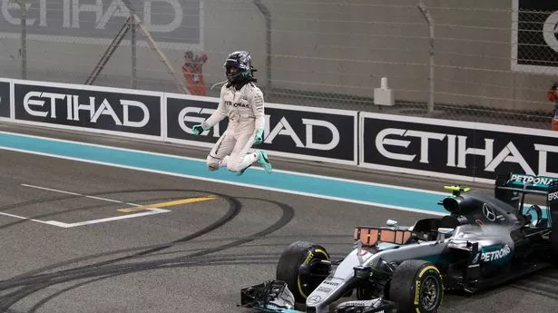

.png)
Nico Rosberg – La Vittoria della Costanza

Figlio del campione del mondo Keke Rosberg, Nico ha costruito la sua carriera con dedizione e intelligenza. Dopo anni di lavoro e una rivalità accesa con Lewis Hamilton, ha coronato il suo sogno nel 2016 conquistando il titolo mondiale con Mercedes, per poi ritirarsi sorprendentemente a fine stagione.
2016 – Il Titolo Mondiale
Il 2016 è stato l'anno perfetto per Rosberg. Dopo aver vinto le prime quattro gare, ha mantenuto la costanza per tutto il campionato, gestendo con freddezza la rivalità con Hamilton. Il titolo fu deciso ad Abu Dhabi, in una gara tesa e drammatica. Con nervi saldi, Nico portò a casa il risultato necessario per diventare campione del mondo.
La Carriera di Rosberg
Rosberg debuttò in Formula 1 nel 2006 con la Williams, dimostrando talento e velocità sin da subito. Passò in Mercedes nel 2010, dove fu compagno di squadra prima di Schumacher e poi di Hamilton. Con 23 vittorie, 57 podi e un titolo mondiale, si è ritirato nel 2016 a soli 31 anni, dichiarando di aver raggiunto il suo obiettivo massimo.

I Caschi Iconici di Nico Rosberg
Casco Campione del Mondo 2016
Casco edizione speciale per il GP in Germania
Casco minimal nero – stile Mercedes